One calm person. Every mask bends that person into its own symbol, and how far it bends is how loaded the mask is. At zero load it is a plain person. The heaviest patterns decide how it is bent, so anger leading and apathy leading give visibly different forms. Colour is the pattern that put the charge there, and brightness is how much. No ring anywhere. The four icons sit at the upper left in full colour and the left menu strip is drawn beside the page to show that the icon, the symbol and the menu row keep one colour and one beat. Nothing is drawn between them.
Each page opens already in motion: the points, lines or cells gather into the person while it bends into the mask. Press a region of the figure, or the Trace button, to see what put the charge there. The load chips and the slider on the right rail scale every weight, so the whole gauge can be tried by hand.
The mask that carries the most charge leads, as the canon already decides it: Preteen when anger leads, Teen when apathy leads. Each picture is a live page. Press it to open it.
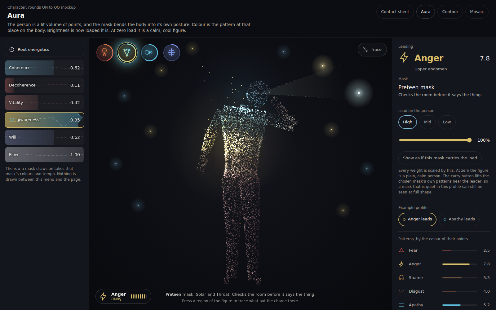
A lit volume of points. The head turns and a beam sweeps dim watchers.
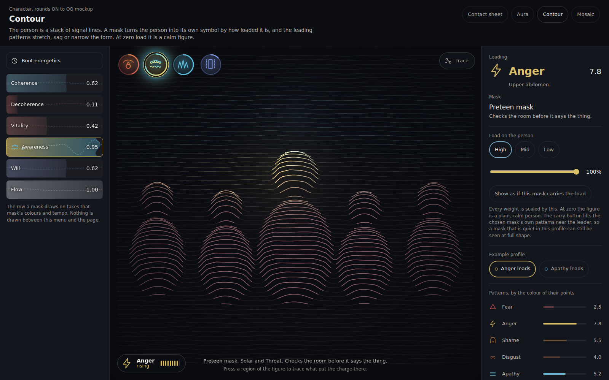
A stack of signal lines. The person splits into a row of copies that nod in turn.
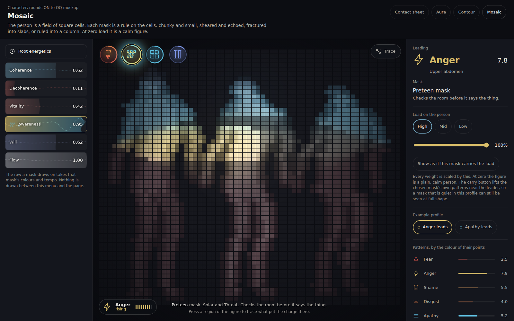
A field of square cells. Rows slide sideways in a wave and two copies stand either side.
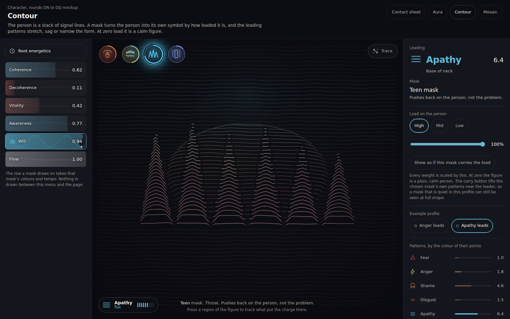
A crown of spikes jolting on a fast beat in front of a big dim round mass.
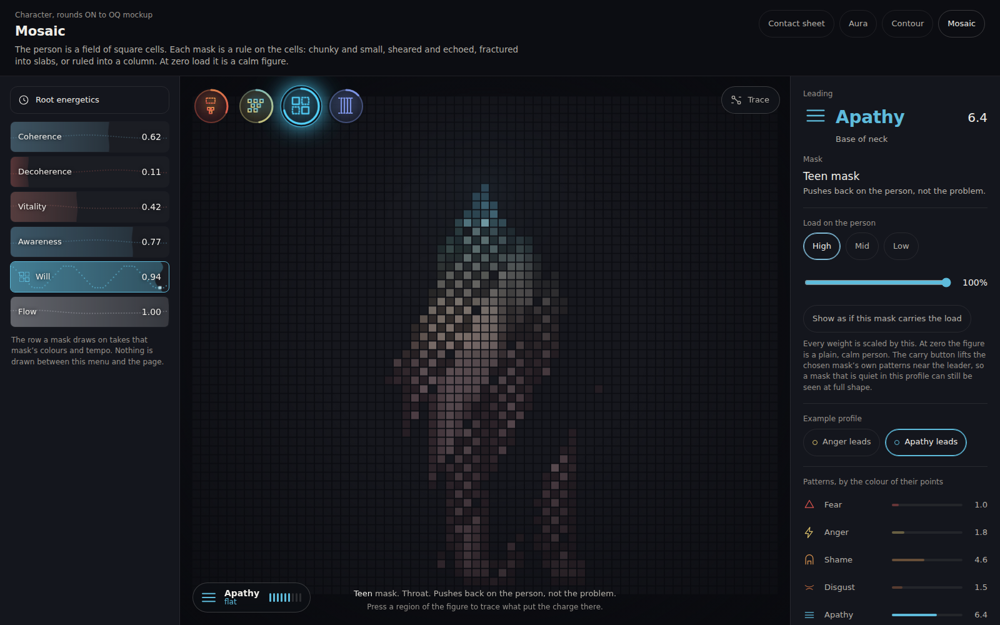
The figure breaks into slabs that snap out of line, some of them inverted.
Each sheet shows the four masks in four columns and three loads in three rows, drawn by the same scene as the page. Low is a plain, calm person in every column, and that is the point: the shape is a live gauge of load. The sheets show each mask as if it carried the load, so a mask that is quiet in the profile can still be judged. On the page, the button called Show as if this mask carries the load does the same. Press a sheet to see it live.
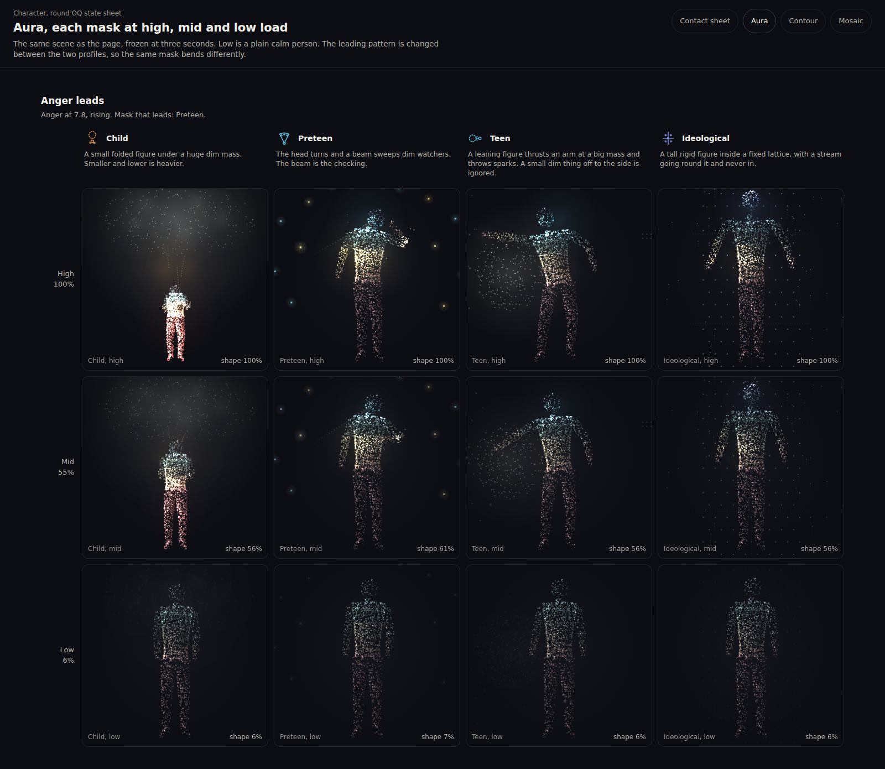
Anger leads. Press to open it live.
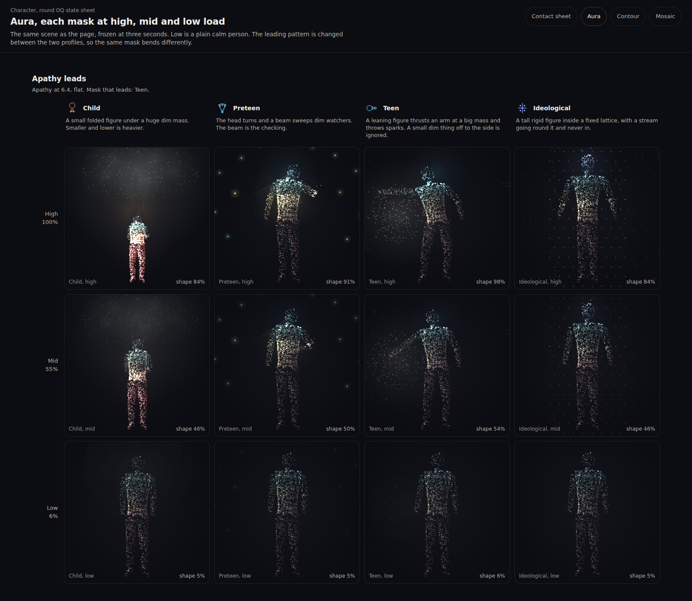
Apathy leads. Press to open it live.
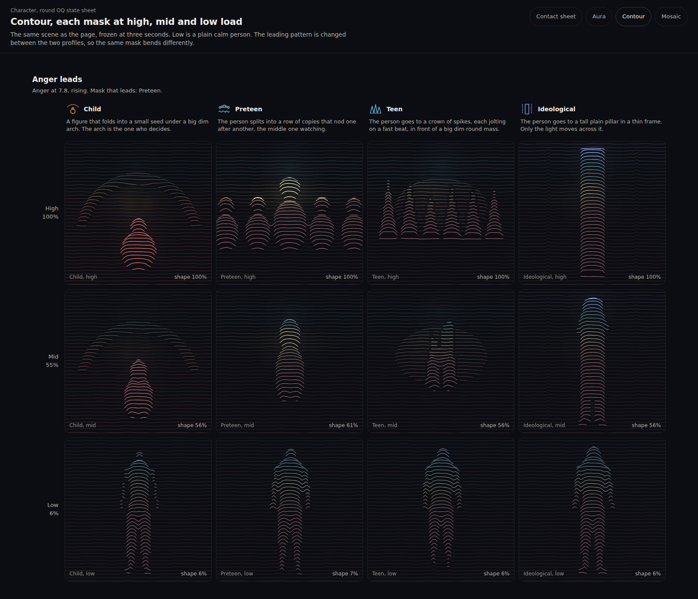
Anger leads. Press to open it live.
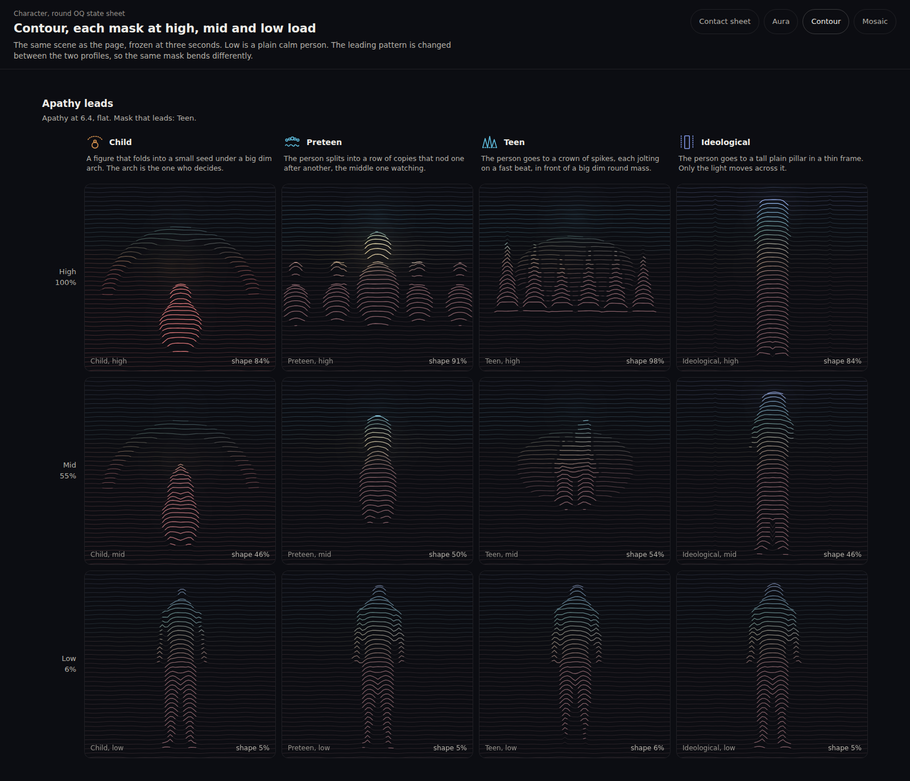
Apathy leads. Press to open it live.
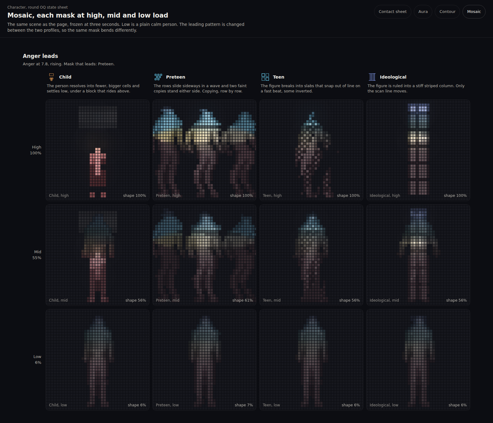
Anger leads. Press to open it live.
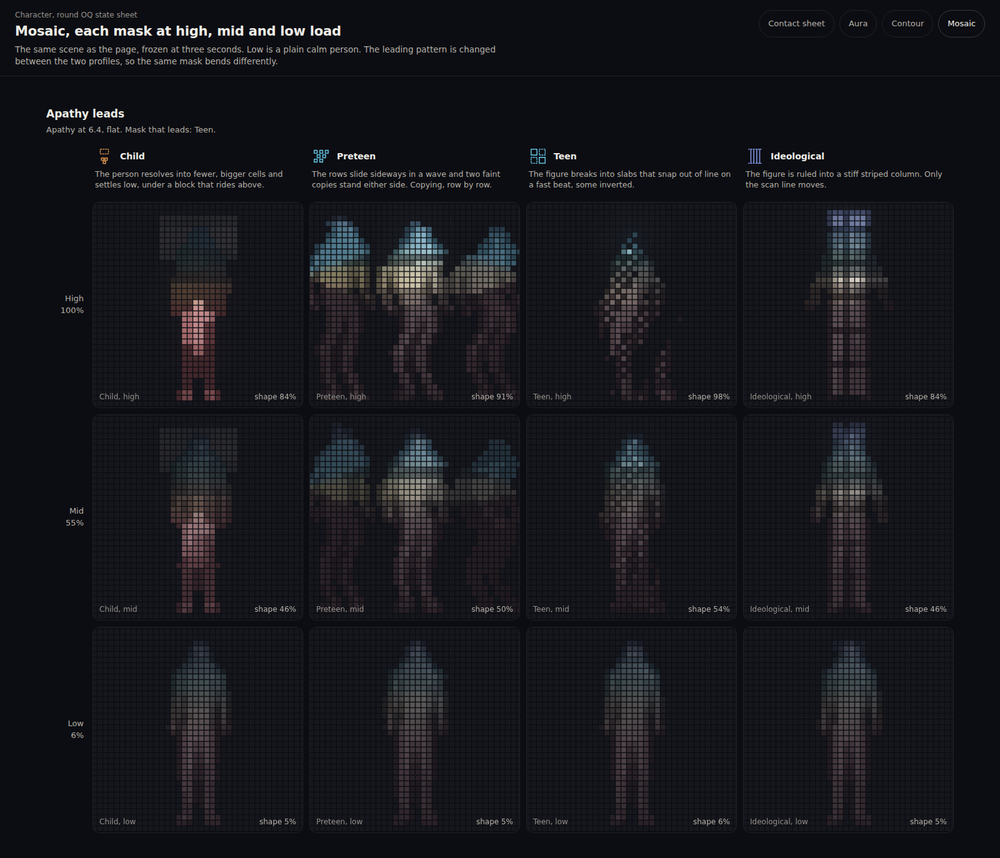
Apathy leads. Press to open it live.
Pressing a region of the figure, or the Trace button, dims every other pattern, draws a thread of points from that region to a card, and shows the chain the engine already holds: a story, supports, a pattern, worn under a mask. It says supports and never causes, and each line carries its provenance. The story lines are invented for the mockup.
Frames at 0, 0.5, 1 and 2 seconds from the moment the page opens, stage only. The page never opens empty: points, lines and cells are already there at zero, and they gather into the person while the pose bends toward the mask. Each mask then keeps its own tempo: Child 4.2 seconds, Preteen 3.0, Teen 1.8, Ideological 7.2. The mask icon pulses on that beat, the symbol moves on it, and the left menu row the mask draws on runs the same beat, in the same two colours.
The same on a phone layout: Aura, Contour, Mosaic.
Four buttons in full colour: each ring is one gradient from the mask's first seat to its last, the arc is how loaded the mask is, and the mark inside is a small drawing of that mask's own symbol in the system on show. The lit one pulses on its tempo. Hover or keyboard focus shows a label with the mask name, its seats and what it does, as in the pictures. They are drawn as buttons because they become protocols.
| Aura, points | Contour, lines | Mosaic, cells | |
|---|---|---|---|
| Child gets small so somebody else decides | Small and folded under a big dim mass. The figure shrinks and sits low with its arms across its chest, and threads of points rise from it to a huge slow cloud above. Smaller and lower is heavier. | A seed under an arch. The person folds into a small egg with a head, under a big dim arch. The arch is the one who decides. | Fewer, bigger cells, low, under a block. The figure goes chunky and small and a grey block rides above it. |
| Preteen checks the room before it says the thing | A head that turns and a beam that sweeps. One arm comes up to the chin. A wedge of light crosses a ring-free scatter of dim watchers, and each lights as it is passed. | A row of copies nodding in turn. Five figures, the middle one larger and watching. A wave of nodding runs from the middle outward. | Rows that slide sideways, with an echo either side. The shear runs as a wave, so it reads as copying, row by row. |
| Teen pushes back on the person, not the problem | A leaning figure with one arm thrust out. The arm hits a big dim mass and throws sparks. A small dim cluster off to the side is never touched. | A crown of spikes jolting. Spikes of different height jump on a fast beat in front of a big dim round mass. | A figure fractured into slabs. The slabs snap out of line on the beat and some are inverted, with a hairline crack between them. |
| Ideological answers from the position instead of the moment | A tall rigid figure in a fixed lattice. Arms stiff, nothing sways. A stream of points goes round the lattice and never in. Only a light crosses it. | A plain pillar in a thin frame. The person becomes one tall block of lines between two posts. Only the light moves across it. | A stiff striped column. The figure is ruled into stripes with a break every sixth row. Only a scan line moves. |
For every mask the same three things tell you the load without reading: how far the shape has left the plain person, how bright and saturated its colours are, and how large the movement is. The leading pattern is the colour that is brightest and the badge at the lower left of the stage says it in one word: Anger rising, Apathy flat.
Measured on this machine, with a Chromium that draws on the processor and has no graphics card, so a laptop will do better. The figures are the time the canvas drawing took each frame, averaged over four seconds with the page running on its own clock. A frame at 60 a second has 16.7 milliseconds.
| System | What is drawn each frame | Measured | Will it hold 60 on a laptop |
|---|---|---|---|
| Aura | About 11,000 points at 1600 wide and 5,200 on a phone, as small squares, sorted so that a few hundred batches carry the whole cloud. Plus a few hundred marks for the symbol round the person. | 3 to 4 ms at 1600. 2 ms on the phone layout. | Yes, with most of the frame left over. It could carry twice the points. |
| Contour | 70 lines of 140 samples at 1600 wide, 54 lines of 96 on a phone. Each sample asks the body how far away it is, so about ten thousand readings a frame, each against the 22 body parts nearby. Each line is one stroke. | 4 to 9 ms at 1600, the heaviest being the Preteen row of copies. 3 to 5 ms on the phone layout. | Yes. It is the heaviest of the three, so on a low end phone drop to 48 lines or halve the samples. |
| Mosaic | About 3,800 cells at 1600 wide and 1,600 on a phone, each asking the body once, three times for the Preteen copies. One filled square per cell. | 2 to 6 ms at 1600. 1 to 3 ms on the phone layout. | Yes. |
The base person is 22 simple parts: a head, a neck, three trunk parts, two shoulders, two arms of two parts and a hand each, two legs of two parts and a foot each. A pose is about 24 numbers: how far each arm swings, how high each shoulder sits, how far the spine curls, how the head turns and drops, how wide the stance is, how big the figure is. Each of the nine patterns owns a fixed push on those numbers, so nine weights make one pose with nine multiply-adds per number. The mask adds its own symbol pose scaled by its load. At zero weight every term is zero and the pose is the plain person. Moving between two poses is one multiply per number per frame. In all, bending the figure costs microseconds. What costs time is drawing it, and the table above is that cost. The deformation does not change with the system, so any of the three can be built on it.
The one thing this needs from the engine is one number per pattern kept current, which the product already holds as the nine axis weights, scaled the way the mask table scales them. It needs no new data.
Open AuraOpen ContourOpen MosaicAura, all loadsContour, all loadsMosaic, all loads